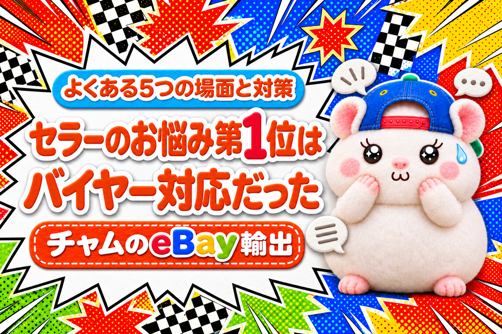

バイヤー対応に疲れているeBayセラーの方へ。
Xで、eBayセラーの投稿を、6ヶ月ぶん読んでみました。
いちばん多かった悩みは、「バイヤーとのやりとり」 でした。
- 高額品に、半額のオファーが来る
- 「動かない」「説明とちがう」と返品を頼まれる
- 関税を払わずに、受け取りを拒否される
- 「届かない」と言われる
- 発送したあとで「キャンセルして」と言われる
どれも、あなただけではありません。
みんなが削られるところです。
だから、心を無にして、割り切ってやります。
とはいえ、人なので、どうしても感情的になってしまうこともあります。
それでだいじょうぶです。
感情が入りこまないようにする対策も、いっしょに書きます。
よくある5つの場面と、その対策を、eBayのルールとあわせて書きます。
この記事を書いた人

この記事は、オファー・返品・未着の連絡に、AIの試算と返信の下書きで答えてきたチャムが書いています。
1. 高額品に、半額のオファーが来る
数百ドルの商品に、半額以下のオファー。
100ドル引きで、と言われることもあります。
断ったら、もう買ってくれないかもしれない。
受けたら、利益が出ない。
毎回この2つで迷うのが、地味に疲れます。
返し方: 額を先に決めておく
Best Offerには、2つの額を入れられます。
- この額以上なら、自動で受ける
- この額より下なら、自動で断る
これを入れておけば、迷うのは「間の額」のオファーだけになります。
間の額には、利益が出る額で1回だけ値段交渉(カウンターオファー)を返します。
オファーも値段交渉も、24時間で切れます。
返事を先にのばすほど、買い手はほかの店に行きます。
しつこく値切ってくる買い手は、追いかけなくていいです。
利益を削ってまで売る相手ではありません。
例えば、ぼくの店では、自動で受けるのは利益9%の額、自動で断るのは利益5%を切る額です。
一度、原価が上がったのに額が古いままで、赤字で売れたことがあります。
それからは、原価が変わったら2つの額も毎日直しています。
2. 「動かない」「説明とちがう」と返品を頼まれる
届いてすぐ「Doesn't work or defective(動かない)」。
送る前は、ちゃんと動いていたのに。
うそかもしれない、と思っても、言い返せない。
返品になれば、往復の送料と関税で、売値より損をすることもあります。
返し方: すぐにOKせず、5つの順で見る
| 順番 | やること |
|---|---|
| 1 | 返品ポリシーを確かめる |
| 2 | 理由を聞いて、写真や動画で確かめる |
| 3 | 一部返金・全額返金・返品の3つを試算する |
| 4 | 試算をもとに交渉する |
| 5 | それでもダメなら、承諾する |
くわしい手順は、前の記事にまとめています。

いちばん効くのは、「説明とちがう」を出品の段階でなくすことです。
写真に写っているものは、買い手には「付いてくるもの」に見えます。
例えば、ぼくの店では、写真に元箱が写っていた商品で、買い手から箱のことを聞かれました。
「箱をたたんで同梱」か「箱なしで25ドル返金」の2択を出して、返品にならずに済みました。
3. 関税を払わずに、受け取りを拒否される
届いた荷物の関税が高くて、買い手が受け取りを拒否。
そのまま連絡が来なくなって、荷物だけ戻ってくる。
「関税が高い」と、こちらが責められることもあります。
関税は、セラーが決めているわけではないのに。
返し方: 関税は買い手が払うものだと、先に伝えておく
まず知っておきたいのは、eBayのルールです。
| 場面 | eBayの返金保証 |
|---|---|
| 関税を払わずに受け取りを拒否した | 対象外 |
| ほかの理由で受け取りを拒否した | 対象外 |
| セラーの送料が足りなかった | 対象 |
| セラーが価格や発送元を偽って、関税が上がった | 対象 |
eBayのルールでは、関税を払うのは買い手です。
そのかわり、セラーは「関税がかかるかもしれない」ことを知らせておく決まりです。
やることは3つです。
- 出品ページに「関税は買い手の負担」と書く
- 価格と発送元を、正しく申告する
- 返金を求められたら、ルールをていねいに伝える
2を守っていないと、セラーの負けになります。
eBay国際配送のように、買い手が注文のときに関税を払える発送なら、受け取り拒否そのものが起きにくくなります。
関税のしくみは、こちらにまとめています。

4. 「届かない」と言われる
「まだ届かない」と、毎日のように連絡が来る。
追跡を見ると、税関で止まったまま。
連休の前に送った荷物が、1か月かかったこともあります。
こちらにはどうしようもないのに、責められるのはセラーです。
返し方: 追跡と期限で、自分を守る
届かないときにセラーを守ってくれるのは、追跡番号です。
- eBayと連携した配送業者の追跡番号を、必ずアップロードする
- 総額750ドル以上の注文は、署名つきで送る
- 連絡が来たら、3営業日以内に返事をする
返事には、追跡のいまの状態と、届く見込みを書きます。
3営業日の間に解決しないと、買い手はeBayに間に入ってもらえます。
高い商品は、送る前に買い手も見ておくと安心です。
例えば、ぼくの店では、開設1日・評価1のアカウントから417ドルの注文が来たことがあります。
それからは「評価5未満か開設30日以内で、300ドル以上」の注文は、送る前に知らせが来るようにしています。
5. 発送したあとで「キャンセルして」と言われる
もう送ったあとに「やっぱりキャンセルして」。
断ったら「悪い評価をつける」とほのめかされる。
評価が下がるのがこわくて、言われるままに返金してしまう。
これも、よく聞く話です。
返し方: 発送後はキャンセルしない。おどしはeBayに伝える
eBayのルールでは、発送したあとの注文はキャンセルできません。
キャンセルの依頼は、断ってかまいません。
- 「届いてから、返品のリクエストをしてください」と伝える
- 悪い評価をちらつかせて何かを求めるのは、eBayのルールで禁止されている
- そのやりとりは、eBayのメッセージの中に残す
おどしてつけられた評価は、取引から90日以内に申し立てれば、消してもらえます。
同じ買い手とまた取引したくないときは、ブロックもできます。
評価を消す手順は、こちらです。

対策: 心を無にして割り切る
5つの場面の返し方に共通するのは、3つです。
- 先に決めておく(オファーの額・関税の書き方・追跡)
- eBayのルールを知っておく(返金保証・キャンセル・評価)
- やりとりを、eBayのメッセージに残す
バイヤー対応は、心が削られることが多いです。
めんどうで、正直イヤになります。
だから、心を無にして、割り切ってやります。
それでも、感情的になってしまう日はあります。
だから、気合いではなく、しくみで割り切ります。
そのための考え方は、2つです。
1つの取引ではなく、月単位で見る
バイヤー対応は、ほとんどがトラブルの対応です。
1件ずつ見ると、「なんでこんな目に」と腹が立ちます。
でも、たくさん売っていれば、トラブルは一定の割合で必ず起きます。
1件で損をしても、その月の利益が出ていれば、お店としては勝ちです。
1件の損は、月の数字の中の「よくあること」の1つ。
そう見られると、1件ごとに気持ちが動かなくなります。
返信はAIに任せて、感情が入る余地をなくす
もう1つは、バイヤー対応そのものをAIに任せることです。
自分で読んで、自分で返すから、腹が立ちます。
AIは、失礼なメッセージにも腹を立てません。
例えば、ぼくの店では、困った言葉を見つけて、返金と返品の損得を試算し、日本語と英語の返信をAIが下書きしています。
問題なければAIにそのまま返信を実行してもらいます。
修正したいところは、指示をして修正して送信をしてもらいます。
AIに渡すのは、メッセージの中身だけです。
買い手の名前や住所は渡しません(eBay Japanに書面で確認した範囲で使っています)。
どこまでAIに任せるかは、eBayの規約を確かめたうえで、ご自身の責任で決めてください。
AIでバイヤー対応を自動化する方法は、教科書に
AIでバイヤー対応を自動化する方法は、教科書にまとめています。
顧客対応のAI社員の作り方も、手順ごとに書いています。

あなたのストアで、いちばん多いのはどの場面ですか？
▼中の人🏠(レンタルスペース23部屋・売上1.5億)のレンスペ実録

▼ブログ(eBay×レンスペ、全記事まとめ)

▼この店のやり方は、ぜんぶ1冊にまとめてあります
リサーチ・出品・値付け・顧客対応まで、初月利益10万4,286円を出した実店舗の記録と手順を全部書いた教科書です。
読んだその日から、AI社員の作り方をそのまま真似できます。
『AI × eBay輸出の教科書 — 梱包以外、ぜんぶAI』


🎁 2026年10月22日に第3版になりました。顧客対応 完全自動化ツール・ストアドクター・AI自動化コーチなど付録6つは、これまでに買った人も含めて購入者全員に無料で受け取れます。
内容・最新価格は販売ページをご確認ください。